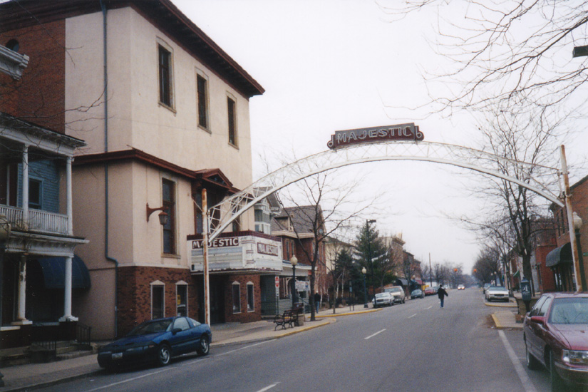
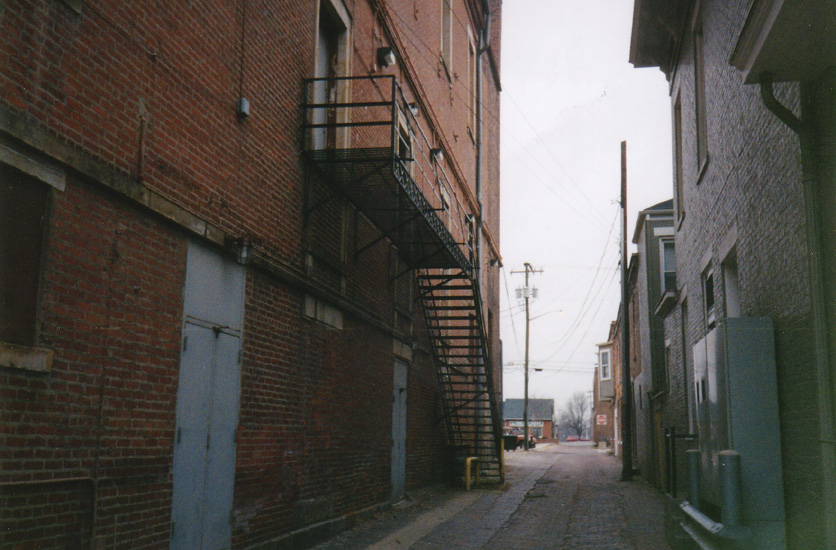

Once called the Masonic Opera House, Chillicothe's Majestic Theater was built in 1853 on the site of the first bank in Chillicothe, which burned down. In its heyday major acts visited it: Milton Berle, Sophie Tucker, Laurel and Hardy. It has been used for opera, vaudeville, stage shows, and movies over the years.
In 1918 the Spanish Flu epidemic hit nearby Camp Sherman, and the Majestic was used as a morgue and autopsy theater for the piles of soldiers' corpses. Embalmers worked under the stage lights, pumping blood into an adjacent alley still known as "Blood Alley."
I poked around the Majestic one morning in March of 2001 but didn't see anything but the alley, which is pretty ordinary looking. The arch you see spanning the street in front of the theater comes from Columbus, where it once stood over High Street along with several others; for years Columbus was known as the "Arch City," but the arches were eventually taken down. In the fall of 2002 new ones went up in the Short North, but of the old ones this is the last survivor.

Today, mysterious fogs are known to drift around the theater. A dead body was once spotted on stage during a performance. A man in a dark suit and top hat drifts down the aisle, floating at stage level, where the house floor used to be before it was lowered. A ghostly little girl is seen running around in the dressing rooms. Three men who spent the night were awakened by a voice asking for someone named Andrew. That's my name, so maybe the ghosts will reveal themselves to me if I ever get inside the Majestic.
The Majestic Theater is located at 45 East Second Street, Chillicothe, Ohio 45601. Call them at (740) 772-2041.
Back
Sources
Havens, Sara. "Mysteries of the Majestic." Southeast Ohio. Winter 1999: 46-48.